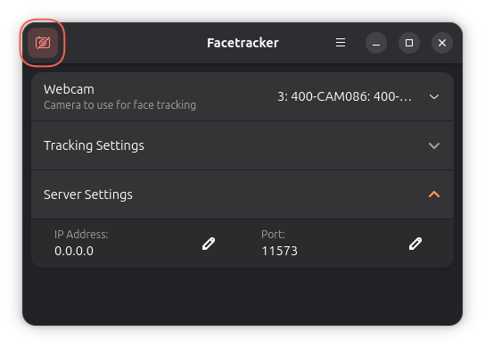
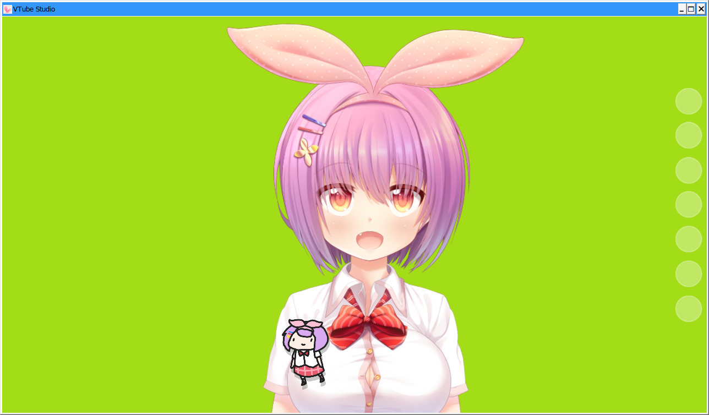
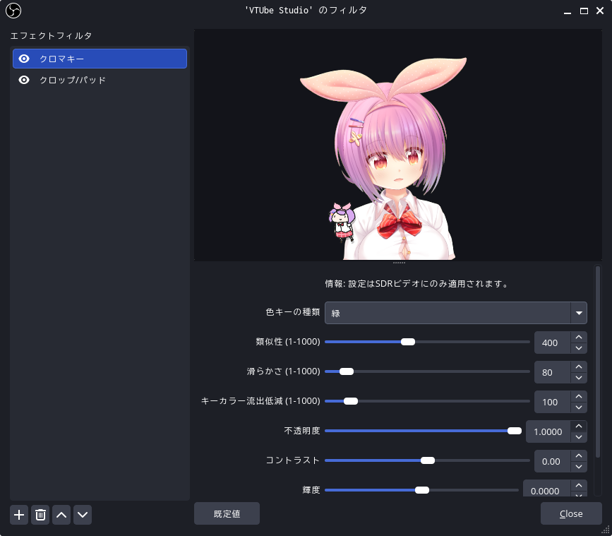
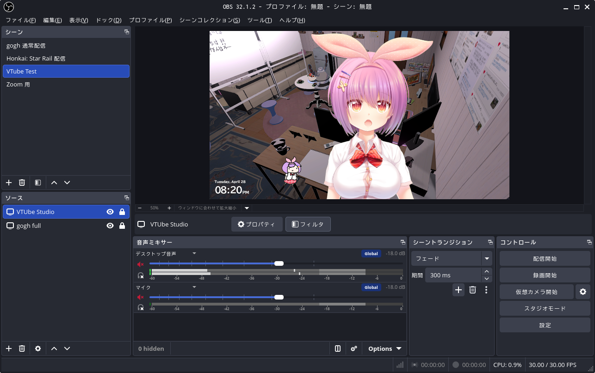

VTuber ごっこ

前回は Web カメラからの映像をゲーム画面と合成して Zoom に出力するところまでやった。 こうなると次は VTuber だよね。
そういや，今って VTuber の定義ってあるんだっけ。 まぁ，定義するのがバカバカしいほど意味が広がってるのは確かだけど。 日本版 Wikipedia の記事を見ても「結局 VTuber ってなんやねん？」という感想しか出ないし。
日頃お世話になってる Kagi Assistant に「技術寄りに定義して」と頼んだら，こう返してくれた。
まぁ，この辺が無難だろうな。 そして「技術的な構成要素」として以下の3つを挙げてくれた。
- モーションキャプチャ（身体の動き）
- フェイシャルキャプチャ / トラッキング（表情）
- リップシンク（音声同期）
つまり動く CG キャラを使って上の3つの要素を満たせば，一応は「VTuber ごっこ」ができるわけだ。 「動画配信プラットフォームで活動」する気はないけど。
既存の Web カメラを使って Live2D1 のアバターを動かすことはできそうだ。
調べてみたところ（調べたのは AI だが），どうやら Ubuntu 環境で Live2D モデルを動かすには VTube Studio 一択のようだ。 VTube Studio は Steam で提供されている。 使い方と OBS Studio との連携方法は以下のページが参考になった。
ただ Ubuntu 環境で使う場合は，そのままでは Web カメラを認識しないので Facetracker も導入する必要がある2。 Facetracker は Flatpak で提供されている3。
$ sudo flatpak install flathub de.z_ray.Facetracker
Looking for matches…
Required runtime for de.z_ray.Facetracker/x86_64/stable (runtime/org.gnome.Platform/x86_64/50) found in remote flathub
Do you want to install it? [Y/n]: y
de.z_ray.Facetracker permissions:
ipc network fallback-x11 wayland x11 devices
ID Branch Op Remote Download
1. [✓] de.z_ray.Facetracker.Locale stable i flathub 2.0 kB / 4.1 kB
2. [✓] org.freedesktop.Platform.GL.default 25.08 u flathub 4.4 MB / 142.4 MB
3. [✓] org.freedesktop.Platform.GL.default 25.08-extra u flathub 3.0 MB / 142.4 MB
4. [✓] org.freedesktop.Platform.codecs-extra 25.08-extra u flathub 869.0 kB / 14.4 MB
5. [✓] org.gnome.Platform.Locale 50 i flathub 147.7 kB / 385.9 MB
6. [✓] org.gnome.Platform 50 i flathub 254.2 MB / 408.8 MB
7. [✓] de.z_ray.Facetracker stable i flathub 167.9 MB / 171.4 MB
Changes complete.
VTube Studio と連携させるために，以下のディレクトリに設定ファイル ip.txt を置く。
~/.local/share/Steam/steamapps/common/VTube Studio/VTube Studio_Data/StreamingAssets/
ip.txt の内容は以下の通り。
# To listen for remote connections, change this to 0.0.0.0 or your actual IP on the desired interface.
ip=0.0.0.0
# This is the port the server will listen for tracking packets on.
port=11573
起動するとこんな画面が表示される。

{kind=link}
Webcom でカメラを指定する以外は既定のままでも動くが Server Settings はそのままだと多分ヤバいので変えたほうがいいだろう。
Server Settings を変えた場合は先程の ip.txt も記述を合わせること。
左上のボタン（アイコンではない）を押さないとトラッキングが始まらないので注意。
VTube Studio にカメラを繋いでキャリブレーションなどの設定をし，背景をグリーンバックにした状態がこれ。

{kind=link}
VTube Studio にはあらかじめいくつかの Live2D モデルが用意されていて，比較的自由に使っていいみたい（EULA があるので注意）。 もちろん自前で用意したモデルも使える。
下の方で小さいのがちょろちょろ動いてるが，これが watermark になってるらしい。 DLC を購入（1,520円）すると消せるそうな。 買い切り有り難い。
VTube Studio をソースとして OBS Studio に取り込んでフィルタを設定したところ。

{kind=link}
クロマキーで背景が綺麗に抜けているのが分かる。 gogh 画面と合わせるとこんな感じ。

{kind=link}
うんうん。 いい感じやね。 くたびれたオッサンの絵面がこうなるんだから，そりゃあ VTuber が流行るわけだよ（笑）
さて OBS はだいたい遊び尽くしたかな。 Streamplace を使った gogh 作業配信は気まぐれで続けている。 Bluesky でアナウンスするので，よろしかったらどうぞ。
ブックマーク
参考

- VTuber学
- 岡本 健 (その他), 山野 弘樹 (その他), 吉川 慧 (その他)
- 岩波書店 2024-08-28 (Release 2024-08-28)
- Kindle版
- B0DBZ3QP7J (ASIN)
- 評価
VTuber を歴史的観点，理論的観点から記述していく試み。多様な論者が登場してなかなか面白い。Kindle 版も横書きで読みやすい。

- VTuberの哲学
- 山野 弘樹 (著)
- 春秋社 2024-03-20 (Release 2024-04-20)
- Kindle版
- B0D1V1WXRH (ASIN)
- 評価
VTuber を哲学的視点から記述していく試み。固定レイアウトなのでブラウザの Kindle Cloud Reader で読めるの助かる。

- あくまのかんづめ〜周防パトラのエッセイ集〜
- 周防パトラ (著)
- エムディエヌコーポレーション（MdN） 2024-08-09 (Release 2024-08-09)
- Kindle版
- B0D9LH6CW3 (ASIN)
- 評価
「個人Vtuber周防パトラは何者なのか？！」を見て衝動買い。泣いていいのか笑っていいのか分からん（褒め言葉）。これを読んで「推しちゃったっ！」を聴くと感慨深いかも。
-
「Live2D」の名称およびロゴは株式会社 Live2D の登録商標だそうな。また，開発用のソフトウェア（SDK および Live2D Cubism Editor）の利用には，利用者の規模や目的に応じた利用許諾契約（End-User License Agreement; EULA）が適用されるとのこと。ちなみに VTube Studio にも EULA が設定されているので利用の際はご注意を。 ↩︎
-
VTube Studio は OpenSeeFace に対応している。 OpenSeeFace 自体は Python スクリプトのようだが Facetracker が OpenSeeFace のインタフェースを持っているということらしい。 ↩︎
-
Flatpak は Ubuntu に既定で入っていない。 Flatpak の導入については前回の記事を参照のこと。 ↩︎